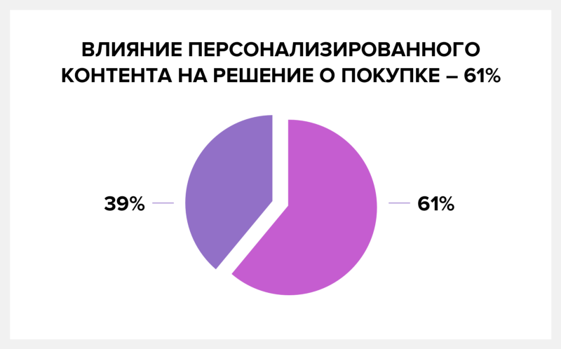
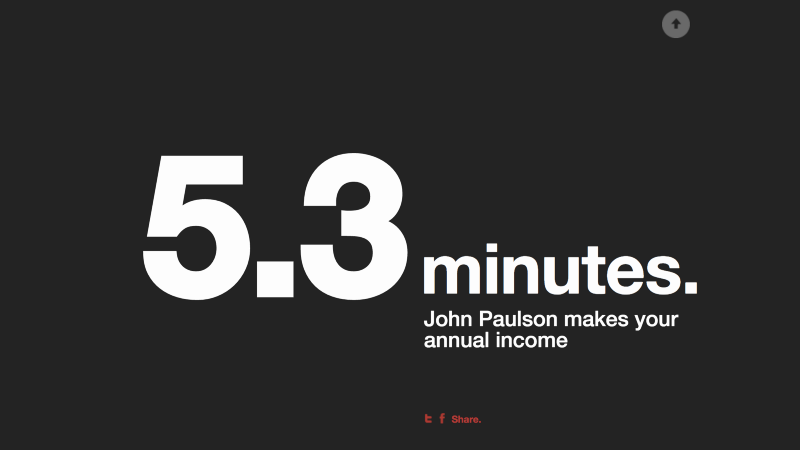
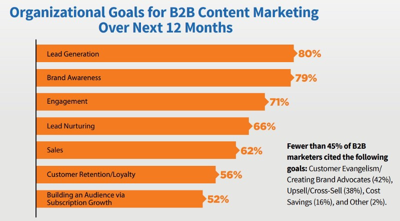
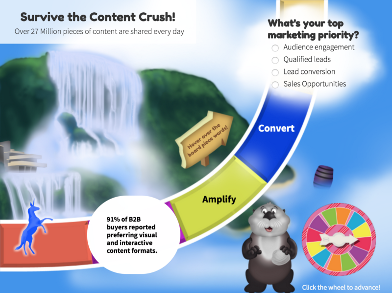
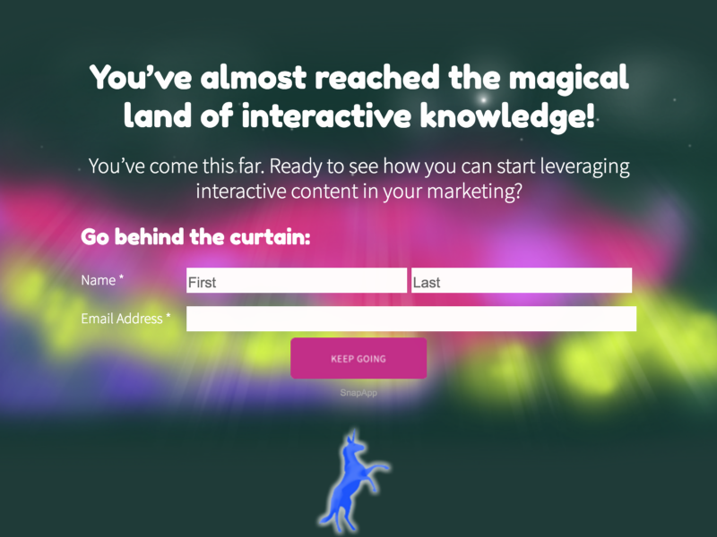

Алгоритмы поиска постоянно изменяются в попытках отфильтровать контент низкого качества. С учетом вышеперечисленного это приводит к масштабным изменениям в стратегиях создания контента.
…или тот тип контента, который Брайен Дин продвигает при помощи своей «техники Небоскрёба».
Результат — взрыв контента, заполнившего Интернет. Сегодня только в блогах каждый день публикуется более 2 миллионов статей.
Этот уровень насыщенности контента вызвал резкую смену стратегий компаний.
В последние годы, многие работали над тем, чтобы разнообразить свой контент, добавляя другие форматы — например, инфографику. Факт: инфографика в течение 2016 года пережила бурный рост: 58% маркетологов отметили ее среди главных тактик, которые они используют для вовлечения аудитории.
Неудивительно, что данные, предоставленные HubSpot, показывают, что инфографика получает лайки и репосты в социальных сетях в 3 раза больше, чем любой другой контент.
Например, некоторые маркетологи считают, что создание инфографики требует определённых профессиональных навыков или дорогостоящего графического дизайнера. Но это не так.
Вам не нужна специальная команда разработчиков, если у вас есть платформы*, предлагающие набор инструментов, ускоряющих и упрощающих процесс создания интерактивного контента.
В этой статье Вы увидите, что интерактивную инфографику не только легко создавать — она еще более эффективна для вовлечения аудитории, чем статичная инфографика, и превращает ваших читателей в потенциальных клиентов.
Почему интерактивная инфографика побеждает своего статичного двойника.
Концепция инфографики проста: вложи как можно больше ценного для читателей в часть контента и визуализируй, чтобы лучше вовлечь их.
И это работает.
Исследования Nielsen Norman показывают, что читатели уделяют больше внимания изображениям, которые несут информацию. В действительности, пользователи тратят больше времени на разглядывание изображений, чем на чтение текста на странице.
По правде говоря, я мог бы привести в пример миллион и одну статистику, подтверждающую, как важно использовать визуальные носители в вашей стратегии контент-маркетинга. Но это и так очевидно. На самом деле это знает практически каждый контент-маркетолог на планете.
Уже сейчас Сеть наводняют миллионы примеров инфографики.
Но как только мы находим что-то, что работает, мы повторяем это снова и снова, пока оно не перестает быть эффективным.
Таким образом…
Есть смыл подняться на новый уровень. И самый простой способ прорваться через шум и вовлечь аудиторию — это адаптировать статичный контент для каждого индивидуума, сделав инфографику интерактивной.
Не верите мне? 88% маркетологов говорят, что интерактивный контент отличает их от конкурентов.
Именно для этого и создана интерактивная инфографика.
Более половины покупателей находятся под сильным влиянием персонализированного контента. В этом случае интерактивная инфографика поможет ужать объемные массивы данных до формата, который будет наиболее релевантным и представит информацию в том виде, который соответствует интересам вашей аудитории и с учетом того, как она кликают или взаимодействует с контентом.

Это способ предоставить тонны ценной информации, ответов и решений, не заставляя читателей продираться сквозь нелепое количество текста.
В конечном итоге, чтобы вы предпочли:
Интерактивный ресурс, который предоставляет ценный персонализированный контент за секунды.
Поиск по статье 30+ страниц со статичным контентом.
Прокрутка на 20 дюймах (скорее всего, имеется ввиду 20-дюймовый монитор — примечание Testix) нескольких экранов «формуляра», заполненного статистикой.
Вариант 1 побеждает!
И вот как это сделать…
Как сделать интерактивную инфографику: простой чек-лист из 6 пунктов.
Существует несчетное количество способов сделать интерактивную инфографику.
Независимо от того, каким будет итоговый проект, есть основы и последовательность действий, которые помогут убедиться, что инфографика привлекает вашу аудиторию и вдохновляет на правильный тип взаимодействия.
Начните с идеи и сбора данных
Создать инфографику не сложно. Реальная проблема заключается в том, чтобы сделать ее вовлекающей.
Вот почему вы начинаете с раскадровки и определяете, какие данные вы хотите использовать.
Существует несколько различных типов источников данных, которые вы можете использовать для быстрого создания инфографики:
Собственные данные из внутренних опросов, профилей клиентов, данных покупателей, опросов и другие внутренние наборы данных.
Отчеты, исследования и отраслевые данные третьих лиц.
Публичные данные и отраслевые исследования.
Важно: перед публикацией убедитесь, что все данные аккуратно подписаны, а все соответствующие разрешения получены.
Теперь …
Если все, что вы включаете, это данные и графика, вы создаете контент, навевающий скуку.
Привяжите его к истории — и у вас получится нечто гораздо более привлекательное.
В истории есть разделы и части, которые преднамеренно перемещают читателя от одной точки к другой через логическую последовательность к финалу. Это отличный способ убедиться, что ваша аудитория не только заинтересована, но и с увлечением продолжает погружаться в инфографику.
Эта инфографика MahiFX — отличный пример построения истории на основе данных:

Когда пользователь вводит свою зарплату и взаимодействует с инфографикой, она шаг за шагом рассказывает ему:
как быстро Джон Полсон зарабатывает свою годовую зарплату
сколько он зарабатывает на торговле
чтобы вы могли купить, если бы проворачивали такие сделки
каковы его расходы по сравнению с вашими.
Это не связано только с историей Джона, это становится личным — поэтому инфографика становится историей пользователя.
Примечание. Если Джонну Полсону понадобилось более пяти секунд, чтобы заработать ваш годовой оклад, Вы опережаете кривую :)
Выберите наглядную тему, которая соответствует истории.
С помощью интерактивной инфографики вы не просто делитесь данными. Вы создаете визуальный объект, специально предназначенный для захвата и удержания внимания аудитории. Но вы не просто хотите, чтобы они запомнили данные, вы хотите также, чтобы они запомнили опыт, полученный благодаря вашему бренду.
Дизайн графики идеально сочетается как с сюжетом истории, так и с набором данных. Вы обнаруживаете себя путешествующим со скоростью 3000 километров в час, летящим мимо Международной космической станции на самую вершину ленты, составленной из 21,9 миллиарда фотографий, выложенных в Инстаграм за год.
Вот что нужно держать в уме, когда вы выбираете визуальную тему для интерактивной инфографики:
Помогают ли изображения и интерактивные элементы помогают оживить данные?
Насколько хорошо изображения, анимация и элементы дизайна отражают ваш бренд, равно как и любые другие бренды, которые выступили в роли партнеров при создании контента?
Где будет жить интерактивная графика? Если она будет размещена на вашем веб-сайте, возможно вы захотите, чтобы дизайн соответствовал теме или шаблонам вашего сайта.
Убедитесь, что идея визуализации соответствует интересам вашей аудитории, индустрии и истории в целом. Инфографика о курортном отдыхе будет иметь совершенно иной визуальный стиль, чем промо мероприятия для топ-менеджеров.
Она увлекает пользователя в необычное мультимедийное приключение, используя сочные кадры, рассказывает о путешествии кофейного зерна от места созревания к потребителю.
Действия пользователя должны создавать ответную реакцию
Интерактивная инфографика должна быть интерактивной, но это не значит, что она должна быть ограничена отдельными кликабельными элементами.
Каждое действие пользователя должно создавать какой-то отклик внутри контента, чтобы все в целом создавало по-настоящему персональный опыт — даже если это всего лишь обычная прокрутка страницы.
По мере того, как пользователь проскролливает контент, плавно возникают заголовки и изображения, на увеличивающихся иллюстрациях появляются буллиты и подписи.
Фон следует за содержанием и также меняется по мере прокрутки, например плоская карта штата превращается в 3D-карту. Это отличный перенести читателя в центр истории. Визуальная стимуляция вовлекает и удерживает внимание.
Скрывайте контент, чтобы завлечь и вдохновить на действие
Вы также можете вовлечь аудиторию, создавая инфографику со скрытыми элементами, на которые нужно кликнуть. Это может спровоцировать пользователей на действие — ведь они заинтересованы в получении информации.
Скрытый контент не только заставляет читателя активно участвовать в изучении контента, он поощряет любопытство, а также позволяет читателям пропустить разделы, которые им мало интересны.
Персонализируйте контент при помощи информации от пользователя
Вы можете гарантировать гораздо более сильное вовлечение, если предложите пользователям данные на основе введенной ими информации. Это соответствует желаниям пользователей: они хотят больше интерактивного контента и больше персонализации.
Потрясающий пример этого — персонализированная инфографика, которая дает представление о том, может ли Ваша работа подвергаться риску быть автоматизированной роботами:
Пользователям нужно выбрать профессию, которая их интересует, чтобы получить релевантную информацию.
Включите графические формы для сбора информации
Около 80% В2В маркетологов в 2017 году определили главной целью создания контента лидогенерацию — привлечение потенциальных клиентов.

Благодаря инфографике, которая предлагает персонализированные результаты или любые данные, адаптированные к вводимой пользователем информации, у вас есть возможность завладеть вниманием и создать еще более невероятный пользовательский опыт.
Вы можете не только фиксировать релевантную информацию о вашей аудитории, но и собирать контактную информацию, предлагая персонализированную версию инфографики на основе их введенной информации.
Либо вы можете предложить им возможность загрузить полную версию инфографики, указав необходимую информацию (например ваш email — комментарий Testix).
Интерактивный контент был создан, чтобы генерировать в 2 раза больше конверсий, чем пассивный контент.
По мере того, как пользователи продвигаются через игровое поле, им попадаются фрагменты исследования, нарезанного на удобные кусочки. Кроме того им нужно отвечать на квалификационные вопросы о выбранной стратегии контент-маркетинга:

В конце инфографики пользователю предлагается ввести свою контактную информацию, чтобы получить доступ к пункту назначения — персонализированной странице, которая основана на ответах пользователя, и которая рекомендует дополнительный контент или демо-версию регистрации:

В этом случае потребители получают гораздо больше информации, но они сами также становятся источниками информации, и таким образом маркетинговые команды могут узнать больше о том, кто на самом деле взаимодействует с ними.
Быстрый старт: превратите статичную инфографику в интерактивную за минуты
Если у вас уже есть инфографика, посмотрите, как вы можете превратить ее в интерактивный опыт.
Рассмотрите следующие варианты:
Где вы можете добавить анимацию, чтобы сделать акцент на определенных данных?
Какую историю вы можете добавить к данным, чтобы сделать ее более вовлекающей?
Может ли спрятать какую-то часть информации, чтобы показать после ввода данных пользователем?
Какие данные можно скрыть до взаимодействия, например, до наведения курсора или клика?
Можно ли уменьшить визуальный шум, заменив различные пояснения и подсказки анимацией, которая появляется при прокрутке или других действиях пользователя?
Можете ли вы добавить дополнительную глубину в инфографику, включив звуковое сопровождение и голосовые фрагменты?
Как нарезать или сегментировать ультра-длинную инфографику, чтобы уменьшить прокрутку?
Как вы можете сделать данные динамическими, чтобы они сохранялись актуальными в реальном времени?
Какую информацию вы можете получить от аудитории, чтобы создать более персонализированный опыт?
Как с помощью графики вы можете «закрыть» контент для получения лидов?
Подводим итоги
Все это поначалу может напугать, но это всего лишь «движущиеся части» интерактивной инфографики, из-за которой она выглядит сложной. По правде говоря, разработка интерактивной инфографики очень похожа на создание любых других статичных визуальных объектов — тех, которые вы уже много раз создавали ранее.
Самая сложная часть процесса — это создание истории вокруг данных и понимание того, как вы хотите все это представить.
Любую часть статичного визуального контента можно оживить при помощи анимации, видео, иллюстраций, анимированного и многоуровневого текста.
В тексте упоминаются платформы для создания инфографики. Автор по понятным причинам подразумевает собственную платформу SnapApp. Тем не менее существует множество других платформ, которые могут быть полезны для создания интерактивной инфографики. Ниже мы привели лишь некоторые из них. (Примечание — Testix)